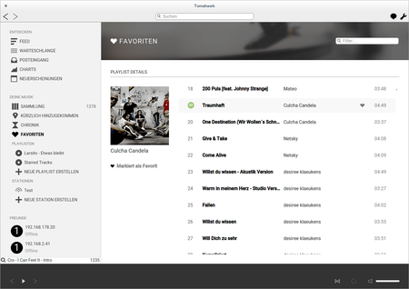

Kompilieren
Dieser Artikel wurde für die folgenden Ubuntu-Versionen getestet:
Ubuntu 14.04 Trusty Tahr
Artikel für fortgeschrittene Anwender
Dieser Artikel erfordert mehr Erfahrung im Umgang mit Linux und ist daher nur für fortgeschrittene Benutzer gedacht.
Achtung!
Da Tomahawk aktuell sehr aktiv entwickelt wird, können sich die benötigten Abhängigkeiten jederzeit ändern. Falls ein Problem auftritt, diesen bitte in der Diskussion melden. Dieser Artikel wurde das letzte Mal im Oktober 2014 mit Tomahawk 0.8.99 getestet.
Zum Verständnis dieses Artikels sind folgende Seiten hilfreich:
Tomahawk ist ein "sozialer" Audioplayer, der neben der Verwaltung einer lokalen Musiksammlung einfachen Zugriff auf Medien- und Musikplattformen wie beispielsweise YouTube oder SoundCloud  unter einer einheitlichen Oberfläche bereitstellt. Da sich das Programm sehr schnell weiterentwickelt, unterscheidet sich die Entwicklungsversion sehr stark von der in den offiziellen Paketquellen verfügbaren Version. Trotzdem läuft diese unter Ubuntu stabil, so dass es sich lohnt, einen Blick darauf zu werfen. Daher zeigt dieser Artikel, wie man die neuste Version von Tomahawk aus dem Quellcode kompiliert.
unter einer einheitlichen Oberfläche bereitstellt. Da sich das Programm sehr schnell weiterentwickelt, unterscheidet sich die Entwicklungsversion sehr stark von der in den offiziellen Paketquellen verfügbaren Version. Trotzdem läuft diese unter Ubuntu stabil, so dass es sich lohnt, einen Blick darauf zu werfen. Daher zeigt dieser Artikel, wie man die neuste Version von Tomahawk aus dem Quellcode kompiliert.
Vorbereitung¶
Bevor man Tomahawk kompilieren kann, müssen noch die fehlenden Abhängigkeiten installiert werden. Die meisten kann man direkt aus den Paketquellen installieren, andere muss man noch zusätzlich kompilieren.
Als erstes empfiehlt es sich, einen Ordner anzulegen, indem alle zu kompilierenden Programme gespeichert werden. Der Ordner könnte beispielsweise im Homeverzeichnis liegen und Tomahawk heißen und würde mit folgendem Befehl im Terminal [1] erstellt werden:
mkdir ~/Tomahawk
Danach wechselt man in das gerade erstellte Verzeichnis:
cd ~/Tomahawk
Abhängigkeiten¶
Als nächstes sollte man die folgenden Abhängigkeiten, die für den Bau und die Nutzung von Tomahawk benötigt werden, aus den Paketquellen heraus installieren[3]:
|  |
| Aussehen der Entwicklerversion (Stand: 11/2014) |
git
subversion
build-essential
cmake
pkg-config
libqt4-dev
libqtwebkit-dev
libqjson-dev
libfftw3-dev
libsamplerate0-dev
zlib1g-dev
libgsasl7-dev (universe)
liblucene++-dev (universe)
libboost-dev
libboost-thread-dev
libtag1-dev
libsparsehash-dev
libgnutls-dev
libqca2-dev
libx11-dev
qtkeychain-dev (universe)
libattica-dev
libphonon-dev
libphononexperimental-dev
phonon-backend-vlc
libqt4-sql-sqlite
libquazip0-dev (universe)
liblastfm-dev (universe)
libjreen-dev (universe)
libtelepathy-qt4-dev (universe, optional)
kdelibs5-dev (optional)
kdelibs-bin (optional)
pkg-kde-tools (optional)
 mit apturl
mit apturl
Paketliste zum Kopieren:
sudo apt-get install git subversion build-essential cmake pkg-config libqt4-dev libqtwebkit-dev libqjson-dev libfftw3-dev libsamplerate0-dev zlib1g-dev libgsasl7-dev liblucene++-dev libboost-dev libboost-thread-dev libtag1-dev libsparsehash-dev libgnutls-dev libqca2-dev libx11-dev qtkeychain-dev libattica-dev libphonon-dev libphononexperimental-dev phonon-backend-vlc libqt4-sql-sqlite libquazip0-dev liblastfm-dev libjreen-dev libtelepathy-qt4-dev kdelibs5-dev kdelibs-bin pkg-kde-tools
sudo aptitude install git subversion build-essential cmake pkg-config libqt4-dev libqtwebkit-dev libqjson-dev libfftw3-dev libsamplerate0-dev zlib1g-dev libgsasl7-dev liblucene++-dev libboost-dev libboost-thread-dev libtag1-dev libsparsehash-dev libgnutls-dev libqca2-dev libx11-dev qtkeychain-dev libattica-dev libphonon-dev libphononexperimental-dev phonon-backend-vlc libqt4-sql-sqlite libquazip0-dev liblastfm-dev libjreen-dev libtelepathy-qt4-dev kdelibs5-dev kdelibs-bin pkg-kde-tools
Nun müssen noch die neuste Version der Bibliothek libechonest kompiliert[4] werden, bevor Tomahawk gebaut werden kann.
libechonest¶
Als erstes lädt man sich den Quellcode als libechonest-2.3.0.tar.bz2 von dieser  Seite herunter und entpackt[2] es im Verzeichnis ~/Tomahawk:
Seite herunter und entpackt[2] es im Verzeichnis ~/Tomahawk:
Nun öffnet man ein Terminal[1] geht in den Ordner ~/Tomahawk, erstellt ein Verzeichnis, indem das Programm gebaut wird und wechselt in dieses:
cd ~/Tomahawk && mkdir libechonest-2.3.0/build && cd libechonest-2.3.0/build
Jetzt muss mit Hilfe von cmake noch die passende makefile erstellt werden.
cmake ..
Falls cmake fehlerfrei durchgelaufen ist, kann das Programm kompiliert werden, wobei "X" für die Anzahl der Prozessorkerne des eigenen Rechners steht:
make -jX
Wenn alles fehlerfrei durchgelaufen ist, werden die Bibliotheken mit folgendem Befehl ins Verzeichnis /usr/local/lib installiert:
sudo make install
Nun wechselt man wieder zurück in den Ordner ~/Tomahawk:
cd ../..
Tomahawk kompilieren¶
Nachdem nun alle Abhängigkeiten installiert sind, kann man sich nun daran machen Tomahawk zu kompilieren.
git clone git://github.com/tomahawk-player/tomahawk.git mkdir ~/tomahawk/build && cd ~/tomahawk/build cmake .. make
Durch das Kompilieren mithilfe des make-Befehls, wird eine ausführbare Datei "tomahawk" im selben Verzeichnis erstellt. Eine Installation durch den Befehl sudo make install ist nicht nötig, Tomahawk kann einfach aus dem aktuellen Verzeichnis mithilfe des folgenden Befehls gestartet werden:
./tomahawk
Programmstarter erstellen¶
Möchte man Tomahawk wie jedes andere Programm bequem über das Menü oder die Shell starten[5], dann bietet es sich an. einen eigenen Programmstarter mit einem Editor zu erstellen[6], welche folgendermaßen aufgebaut sein kann:
1 2 3 4 5 6 7 8 9 10 11 12 13 14 | [Desktop Entry] Type=Application Version=1.0 Name=Tomahawk GenericName=Music Player GenericName[de]=Musik Player Exec=[PFAD-ZUR-ARBEITSUMGEBUNG]/tomahawk/build/tomahawk %u Comment=Tomahawk — Social Music Player Comment[de]=Tomahawk – der soziale Audioplayer Icon=[PFAD-ZUR-ARBEITSUMGEBUNG]/tomahawk/data/icons/tomahawk-icon.svg Terminal=false Categories=Qt;AudioVideo;Audio;Player; MimeType=x-scheme-handler/tomahawk;x-scheme-handler/spotify; X-Desktop-File-Install-Version=0.22 |
Dabei muss man [PFAD-ZUR-ARBEITSUMGEBUNG] nur durch das Verzeichnis ersetzten, welches man am Anfang vor der Kompilierung festgelegt hat. Danach speichert man die Datei als tomahawk.desktop im Verzeichnis ~/.local/share/applications/ ab und macht sie ausführbar[7].
Tomahawk aktualisieren¶
Um Tomahawk zu aktualisieren, benennt man einfach den Ordner tomahawk im erstellten Arbeitsverzeichnis um oder löscht diesen. Danach lädt man Tomahawk erneut herunter und kompiliert es erneut.
Tomahawk deinstallieren¶
Möchte man Tomahawk wieder deinstallieren, dann sollte man davor die manuell kompilierten Bibliothek libechonest entfernen. Dazu öffnet man wieder ein Terminal,wechselt man in das Verzeichnis ~/Tomahawk/libechonest/build und führt folgenden Befehl aus:
sudo make uninstall
Damit werden sämtliche manuell installierten Komponenten von libechonest deinstalliert. Anschließend kann man Tomahawk komplett entfernen, indem man das gesamt Arbeitsverzeichnis und den selbst erstellten Starter löscht.
- Erstellt mit Inyoka
-
 2004 – 2017 ubuntuusers.de • Einige Rechte vorbehalten
2004 – 2017 ubuntuusers.de • Einige Rechte vorbehalten
Lizenz • Kontakt • Datenschutz • Impressum • Serverstatus -
Serverhousing gespendet von